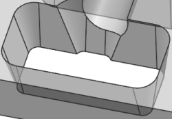
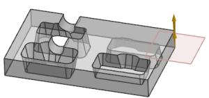
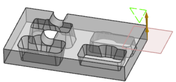
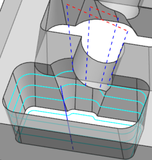

You will edit the Non cutting Moves options to establish the clearance plane, and then use the clearance plane for traverse moves.
Refresh the display.

Open the Non Cutting Moves dialog box, and on the Transfer/Rapid tab, set the following:
Common Clearance group
Clearance Option = Automatic Plane
Safe Clearance Distance = 0.1
Zoom out on the part.

Click Display.
Notice the clearance plane location.

Set the following:
Between Regions group
Approach subgroup
Approach Method = Clearance – Tool Axis
Clearance Option = Use Common
Tool Axis = No Change
Departure subgroup
Departure Method = Clearance – Tool Axis
Clearance Option = Use Common
Tool Axis = No Change
Traverse subgroup
Traverse Type = Clearance
Clearance Option = Use Common
Within Regions group
Use the Same as Between Regions settings
Initial and Final group
Approach subgroup
Use the Same as Between Regions settings
Zoom in on the part.
Click OK.
The Contour Profile dialog box appears.
Generate the tool path.
Notice that the tool crosses the wall gap with a move to the clearance plane at both locations.
